We are now going to take a closer look at how to make a pinch-twist, also known as an "ear-twist" or sometimes even a "bean-twist". This technique is used in many models. For instance, you can find it in the following tutorials: the sword, the frog, the tiger, the penguin, the flower, the giraffe, etc.
The reason this particular technique is used so frequently is not only because of its natural-looking ear shape (or bean shape) but also because it strengthens and reinforces the parts of a balloon sculpture which might otherwise be somewhat fragile and delicate.
That makes it all the more important to master this skill.
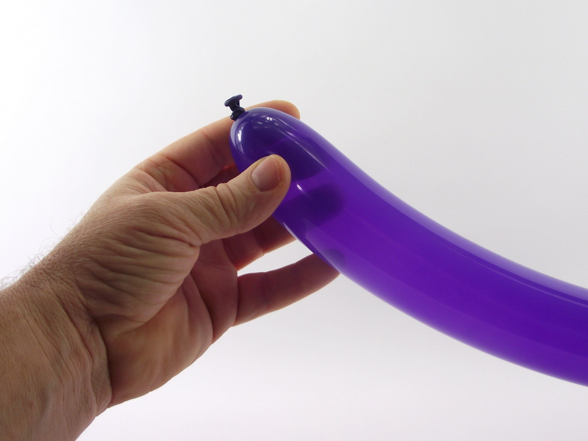
1- To practice making a string of pinch-twists, inflate a modeling balloon about a third of the way.
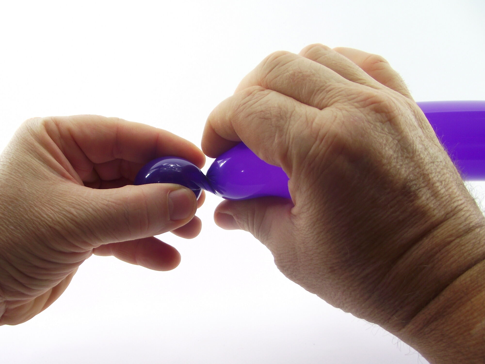
2- Start by making a first bubble...
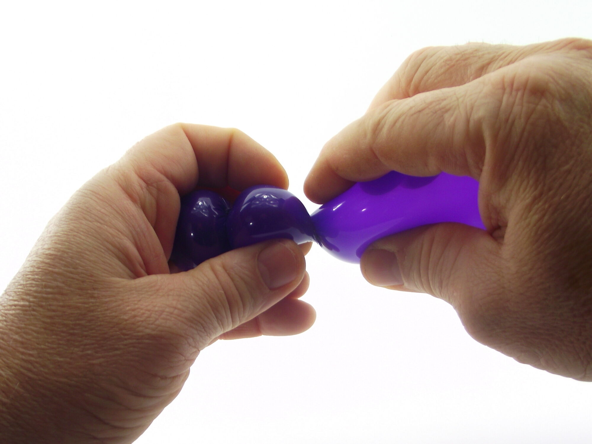
3- Then a second one...
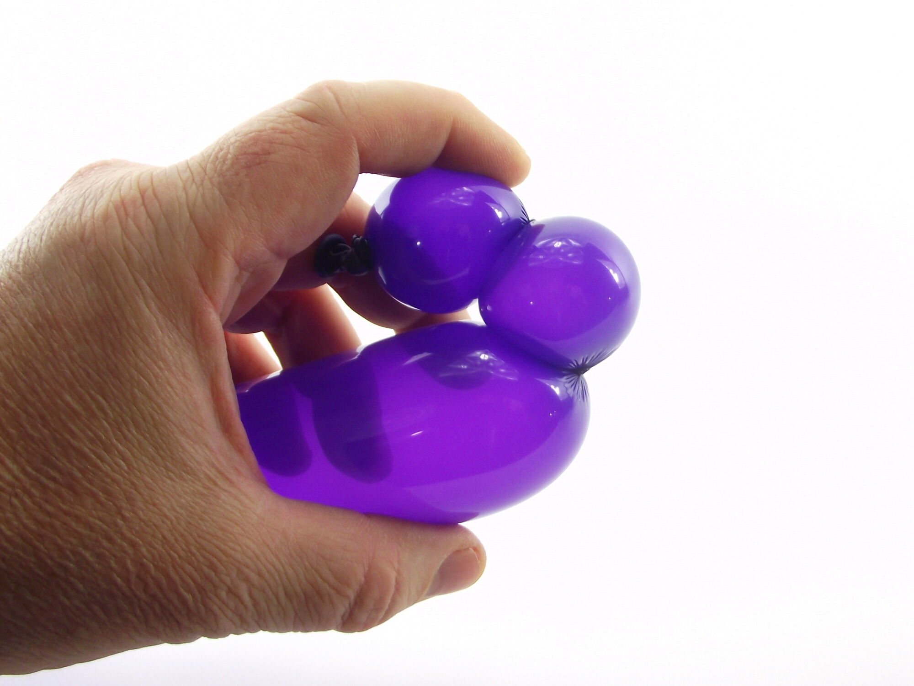
4- Bend the balloon at the second bubble, so that the bubble is sticking out from your support hand.
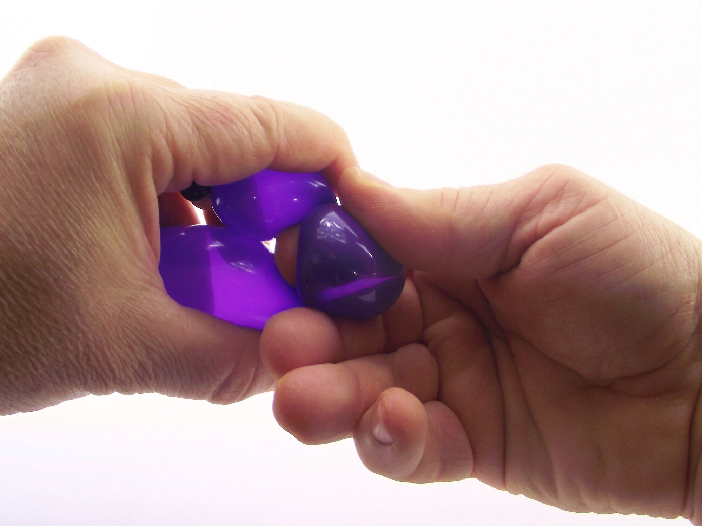
5- Insert the pointer of your support hand under this second bubble to pull it out of the way, and so that it's easier to hold between your thumb and middle finger.
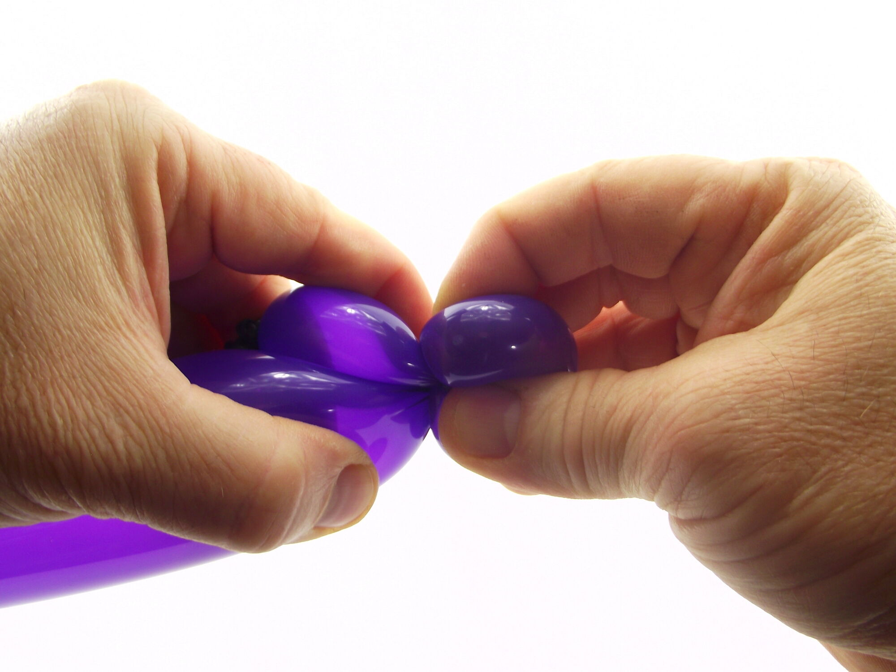
6- Once the bubble is firmly secured, you need to pinch it, and then twist it several times around the base (hence the name: pinch-twist).
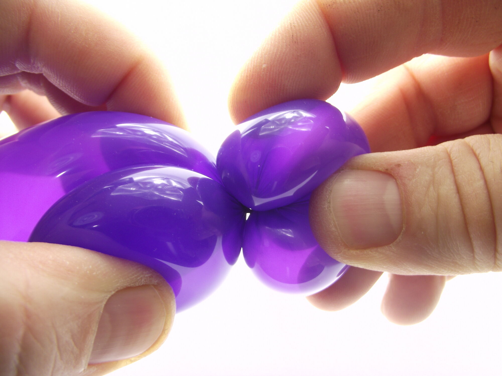
7- You need to twist it at least 3 or 4 times around its base.
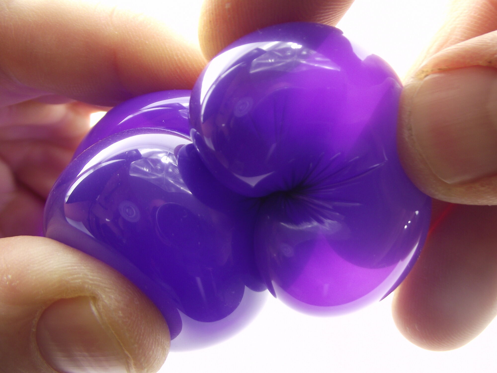
8- Having done so, you get a bubble that looks like a bean or an ear.
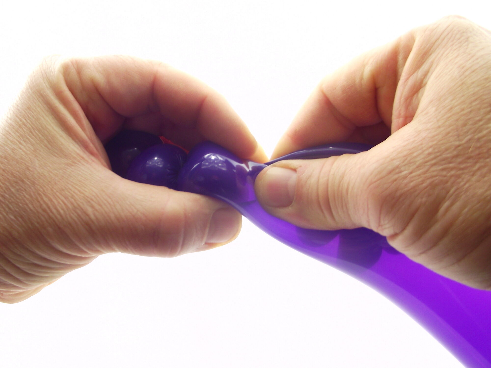
9- To practice further, make two more bubbles following the first one…10- Bend the balloon again so the last bubble is sticking out from your support hand.
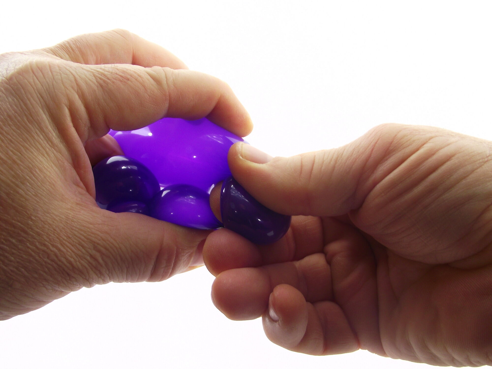
11- Insert the pointer of your support hand under this last bubble to pull it out of the way, and so that it's easier to hold between your thumb and middle finger.
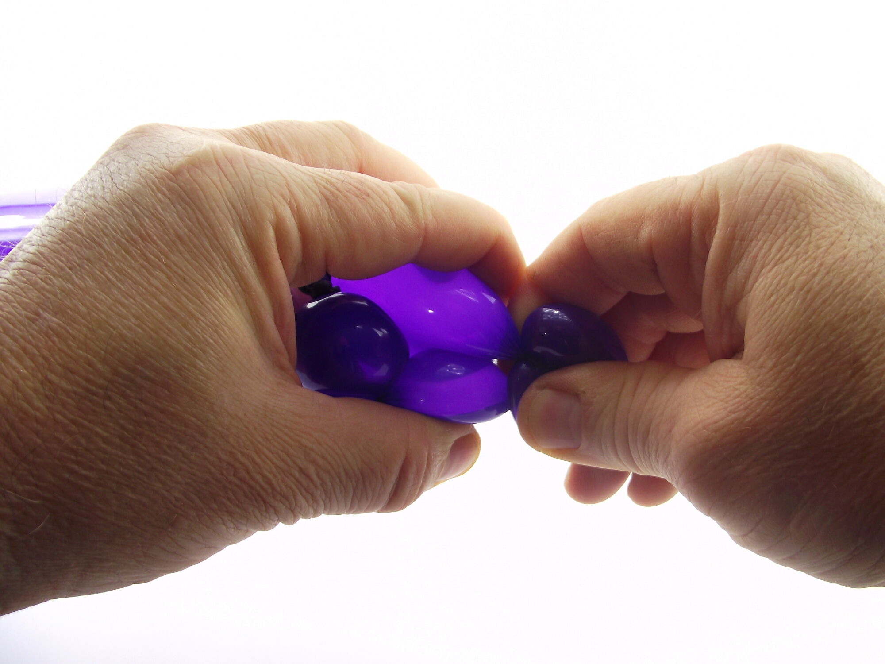
12- And once you have the bubble firmly in your hand, pinch the bubble and twist it several times around the base.
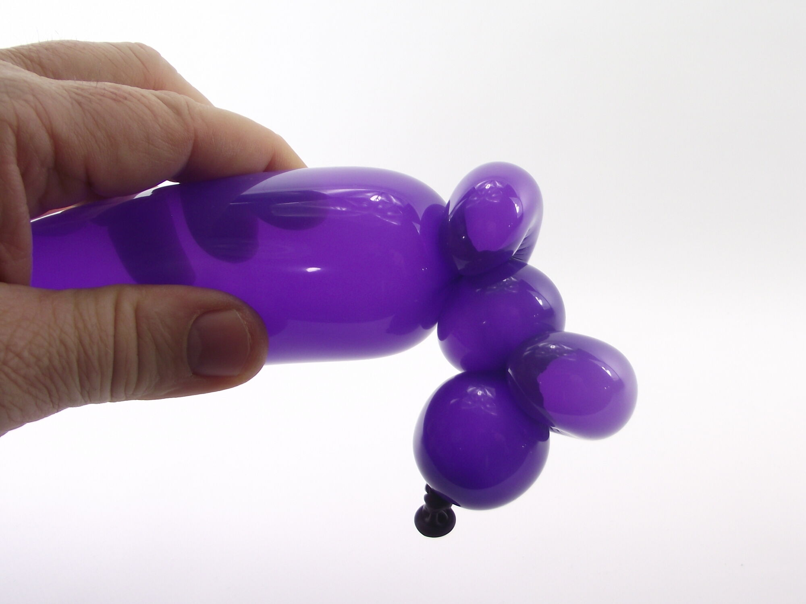
13- This gives you a second pinch-twist.
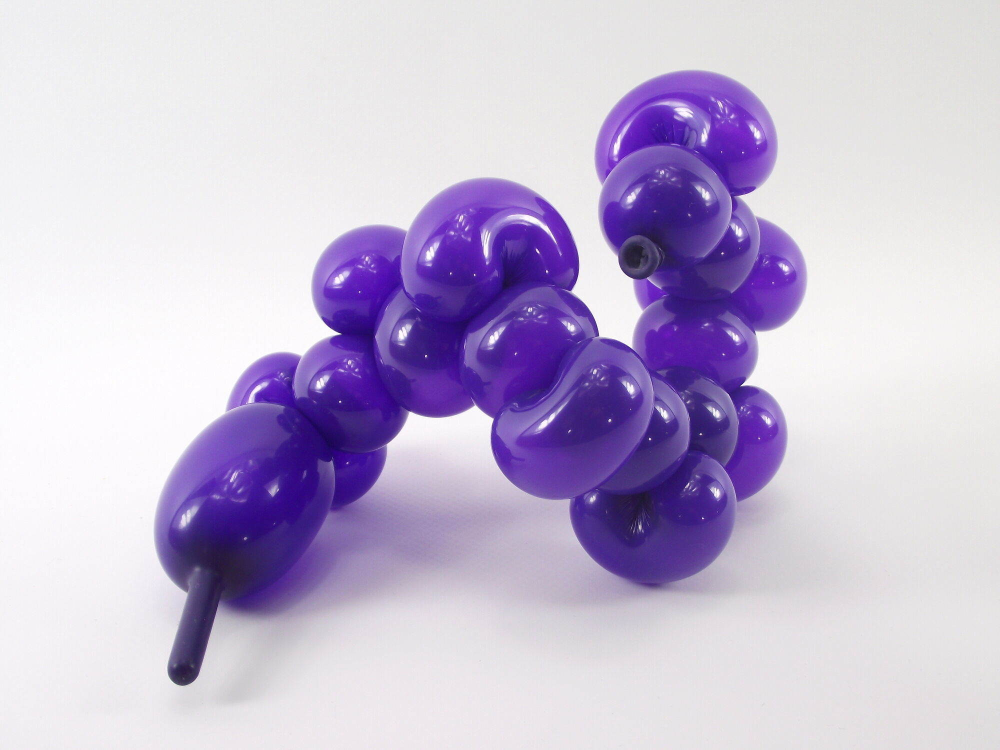
14- Rinse and repeat as many times as you like!15- You should now be able to make a pinch-twist!
See you soon! For another lesson... with Môssieur Ballon!